InimigoEnemy
PenitentePenitent
Peregrinos que juraram carregar a culpa do mundo. A clava é a culpa.Pilgrims who swore to carry the world's guilt. The club is the guilt.
WIKI · V0.4.2
Tudo sobre o jogo, tirado direto dos arquivos dele: a história, os treze deuses, cada domínio, guardião e criatura, e todo o equipamento.Everything about the game, taken straight from its files: the story, the thirteen gods, every domain, guardian and creature, and all the gear.
LORE
Houve um tempo em que treze deuses dividiam o mundo. Cada um tinha um domínio, e cada domínio tinha a cara do seu deus.There was a time when thirteen gods shared the world. Each had a domain, and each domain wore its god's face.
Numa noite sem nome, todos sumiram. Ao mesmo tempo. Ninguém viu para onde foram.On a nameless night, they all vanished. At the same time. No one saw where they went.
Os domínios ficaram. Sem dono, apodreceram do jeito de cada um: a cinza ficou sagrada, o inverno não acabou, a forja não parou, os mortos esqueceram o próprio nome, o sonho virou pesadelo.The domains remained. Ownerless, each rotted in its own way: The ash became sacred, the winter never ended, the forge never stopped, the dead forgot their names, the dream turned to nightmare.
Você acordou na beira do Mar de Cinzas, com um manto que não lembra de ter vestido. A Vigia te chama de Moksha e diz que você já esteve aqui antes. Muitas vezes.You woke at the edge of the sea of ash, in a cloak you do not remember putting on. The warden calls you moksha and says you have been here before. Many times.
Em algum lugar, no fim de tudo, está o Trono. Quem senta nele sabe o que aconteceu com os deuses.Somewhere, at the end of everything, stands the throne. Whoever sits on it knows what happened to the gods.
O Imperador Cego caiu. Pela primeira vez em mil anos, o Trono ficou vazio.The blind emperor has fallen. For the first time in a thousand years, the throne stands empty.
Você se senta. Por um instante, vê o que ele via: doze deuses, de mãos dadas, entrando numa porta de luz.You sit down. For an instant, you see what he saw: Twelve gods, hand in hand, walking into a door of light.
O décimo terceiro não entrou. O que se escondia viu tudo do fundo da terra e não contou a ninguém.The thirteenth did not go in. The one who hid saw it all from deep in the earth and told no one.
Não foram embora. Foram dormir. E o sonho deles é este mundo: cada domínio, um pesadelo de quem sonha.They did not leave. They went to sleep. And their dream is this world: Each domain, a nightmare of the one who dreams it.
Atrás da porta, uma voz que não é de deus nenhum: "Ainda não. Volte quando a brasa queimar mais."Behind the door, a voice that belongs to no god: "Not yet. Come back when the ember burns hotter."
A Vigia te encontra de novo na beira do Mar de Cinzas. "Você de novo. Ou outro igual a você."The warden finds you again at the edge of the sea of ash. "You again. Or another just like you."
Com todas as brasas acesas, a porta não resiste. Do outro lado, treze cadeiras vazias.With every ember lit, the door gives way. On the other side, thirteen empty chairs.
E uma décima quarta, menor, de frente para as outras. Na madeira, alguém gravou o seu nome. Faz muito tempo.And a fourteenth, smaller, facing the others. Someone carved your name in the wood. A long time ago.
Você entende, enfim, por que a Vigia sempre te reconhece. Você não chegou depois dos deuses. Você é o que eles deixaram para trás.You understand at last why the warden always knows you. You did not arrive after the gods. You are what they left behind.
PANTHEON
Numa noite sem nome, todos sumiram. Cada um deixou um domínio, que apodreceu do seu jeito.On a nameless night, all of them vanished. Each left a domain behind, rotting in its own way.
ROUTE
Dez andares. Depois de cada domínio vem o guardião dele; depois, a passagem, onde você escolhe um entre três caminhos. Morreu, volta ao Mar de Cinzas.Ten floors. Each domain ends with its guardian; then comes the passage, where you choose one of three paths. Die, and you wake on the Sea of Ash again.
DOMAINS
Inscrições, clima, perigo, criaturas, elite e guardião de cada lugar.Inscriptions, weather, hazard, creatures, elite and guardian of each place.
InimigoEnemy
Peregrinos que juraram carregar a culpa do mundo. A clava é a culpa.Pilgrims who swore to carry the world's guilt. The club is the guilt.
InimigoEnemy
Soldados das Casas do Mar de Cinzas. O escudo protege a frente; as costas, ninguém.Soldiers of the houses of the sea of ash. The shield guards the front; nothing guards the back.
InimigoEnemy
Vem para arder. Acredita que quem queima vira parte do deus.Comes to burn. Believes that whoever burns becomes part of the god.
InimigoEnemy
Nada sob a cinza. O volume que se mexe no chão é ele.Swims beneath the ash. The bulge moving in the ground is him.
InimigoEnemy
Atira lascas de fulgurante. A mira trava um instante antes do disparo.Shoots fulgurite shards. The aim locks an instant before the shot.
EliteElite
Julga em nome de um deus que não responde mais. Salta e cai onde você está.Judges in the name of a god who no longer answers. Leaps and lands where you stand.
GuardiãoGuardian
Arrancou os olhos para ver o futuro. Senta no Trono há mil anos.Tore out his eyes to see the future. He has sat on the throne for a thousand years.
InimigoEnemy
Guarda a porta de um dono que não volta. Abaixa antes do bote.Guards the door for a master who never returns. Crouches before it pounces.
InimigoEnemy
Peregrinos que juraram carregar a culpa do mundo. A clava é a culpa.Pilgrims who swore to carry the world's guilt. The club is the guilt.
InimigoEnemy
Soldados das Casas do Mar de Cinzas. O escudo protege a frente; as costas, ninguém.Soldiers of the houses of the sea of ash. The shield guards the front; nothing guards the back.
InimigoEnemy
Nada sob a cinza. O volume que se mexe no chão é ele.Swims beneath the ash. The bulge moving in the ground is him.
InimigoEnemy
Foi gente. O gelo não lembra quem. Atira em leque.Was someone once. The ice does not remember who. Shoots in a fan.
EliteElite
Elite dos Salões. Lanças de gelo e uma investida certeira.Halls elite. Ice spears and a precise charge.
GuardiãoGuardian
Guardião dos Salões. Uiva e a matilha responde.Guardian of the halls. He howls and the pack answers.
InimigoEnemy
Esqueceu o próprio nome; lembra só a medida certa do aço.Forgot his own name; remembers only the right measure of steel.
InimigoEnemy
O metal que não quis virar arma. Pula, queima e vira poça.Metal that refused to become a weapon. It hops, burns, and melts into a puddle.
InimigoEnemy
Soldados das Casas do Mar de Cinzas. O escudo protege a frente; as costas, ninguém.Soldiers of the houses of the sea of ash. The shield guards the front; nothing guards the back.
InimigoEnemy
Peregrinos que juraram carregar a culpa do mundo. A clava é a culpa.Pilgrims who swore to carry the world's guilt. The club is the guilt.
InimigoEnemy
Atira lascas de fulgurante. A mira trava um instante antes do disparo.Shoots fulgurite shards. The aim locks an instant before the shot.
EliteElite
Elite da Forja. A martelada solta ondas pelo chão.Forge elite. Each hammer blow sends waves along the ground.
GuardiãoGuardian
Guardião da Forja. O ferreiro que o deus esqueceu ligado.Guardian of the forge. The smith the god forgot to turn off.
InimigoEnemy
Dorme na própria cova até ouvir passos. A terra que se mexe é ele.Sleeps in its own grave until it hears steps. The earth that moves is him.
InimigoEnemy
Chora por todos os mortos da Necrópole. Não lembra por quem. Plana e mergulha gritando.Weeps for all the dead of the necropolis, not knowing for whom. Glides and dives screaming.
InimigoEnemy
O gato-sombra que come as oferendas. Abaixa antes do bote.The shadow cat that eats the offerings. Crouches before it pounces.
InimigoEnemy
Peregrinos que juraram carregar a culpa do mundo. A clava é a culpa.Pilgrims who swore to carry the world's guilt. The club is the guilt.
EliteElite
Elite da Necrópole. Lê o nome dos mortos em voz alta, e eles levantam.Elite of the necropolis. Reads the names of the dead aloud, and they rise.
GuardiãoGuardian
Guardião da Necrópole. Lembra de todos os mortos, menos de si mesmo.Guardian of the necropolis. Remembers every dead but himself.
InimigoEnemy
Guardas que viraram pedra esperando a ordem de parar. Mergulham em diagonal.Guards who turned to stone waiting for the order to stand down. They dive diagonally.
InimigoEnemy
Copia o mesmo livro há mil anos. O glifo que escreve te persegue.Has copied the same book for a thousand years. The glyph he writes hunts you.
InimigoEnemy
Ainda sobe a Torre tijolo por tijolo. De longe atira o tijolo em arco; de perto, bate com ele.Still builds the tower brick by brick. From afar he lobs the brick; up close, he hits you with it.
InimigoEnemy
Soldados das Casas do Mar de Cinzas. O escudo protege a frente; as costas, ninguém.Soldiers of the houses of the sea of ash. The shield guards the front; nothing guards the back.
EliteElite
Elite da Torre. Lê os livros com os dedos e escreve glifos que perseguem.Tower elite. Reads books with his fingers and writes glyphs that hunt.
GuardiãoGuardian
Guardião da Torre. Ergueu a torre e esqueceu a própria língua.Guardian of the tower. Raised the tower and forgot his own tongue.
InimigoEnemy
Não come. Só cresce por cima do que encontra. Investe em linha reta.Does not eat. Just grows over whatever it finds. Charges in a straight line.
InimigoEnemy
Aponta sempre para quem respira. Abre a flor antes de atirar.Always points at whatever breathes. The flower opens before it fires.
InimigoEnemy
Finca as raízes perto de quem respira e incha. Bata antes que estoure.Roots itself near whatever breathes and swells. Hit it before it bursts.
InimigoEnemy
Guarda a porta de um dono que não volta. Abaixa antes do bote.Guards the door for a master who never returns. Crouches before it pounces.
EliteElite
Elite do Jardim. Faz o chão crescer contra você.Garden elite. Makes the ground grow against you.
GuardiãoGuardian
Guardiã do Jardim. Tudo que cresce aqui nasceu dela.Guardian of the garden. Everything that grows here was born of her.
InimigoEnemy
Desceu rezando e não quis subir. Pancada lenta, bem avisada.Went down praying and would not come up. Slow, well-warned blow.
InimigoEnemy
Jurou guardar a nave da Catedral. O escudo segura a frente; as costas, não.Swore to guard the cathedral nave. The shield holds the front; the back, it does not.
InimigoEnemy
Uma prece que ficou boiando e aprendeu a mirar. O fio trava antes do choque.A prayer left floating that learned to aim. The thread locks before the shock.
InimigoEnemy
Atira lascas de fulgurante. A mira trava um instante antes do disparo.Shoots fulgurite shards. The aim locks an instant before the shot.
EliteElite
Elite da Catedral. Ainda reza a missa; a água obedece.Elite of the cathedral. She still says mass; the water obeys.
GuardiãoGuardian
Guardião da Catedral. Alguém ouviu as preces. Não era o deus.Guardian of the cathedral. Someone heard the prayers. It was not the god.
InimigoEnemy
Em Carcosa todos usam máscara. Este some e aparece atrás de você.In carcosa everyone wears a mask. This one vanishes and appears behind you.
InimigoEnemy
Anuncia um rei que nunca chega. O sino chama almas que explodem.Heralds a king who never comes. The bell calls souls that burst.
InimigoEnemy
Gira no lugar e atravessa a sala num rodopio. Depois fica tonto.Spins in place, then whirls across the room. Afterward it is dizzy.
InimigoEnemy
Nada sob a cinza. O volume que se mexe no chão é ele.Swims beneath the ash. The bulge moving in the ground is him.
EliteElite
Elite de Carcosa. Rápido, some, aparece, corta.Carcosa elite. Fast. Vanishes, appears, cuts.
GuardiãoGuardian
Guardião de Carcosa. A máscara caiu; não havia nada embaixo.Guardian of carcosa. The mask fell; there was nothing beneath.
InimigoEnemy
Mede o céu para ninguém. O olho acende antes do raio.Measures the sky for no one. The eye lights up before the beam.
InimigoEnemy
Um nome que o deus esqueceu. Pisca antes de explodir.A name the god forgot. It flickers before it explodes.
InimigoEnemy
Um olho de vidro que mira de qualquer ângulo. Quando o fio fica vermelho, saia da linha.A glass eye that aims from any angle. When the thread turns red, get out of the line.
InimigoEnemy
Foi gente. O gelo não lembra quem. Atira em leque.Was someone once. The ice does not remember who. Shoots in a fan.
EliteElite
Elite do Observatório. Raios e estrelas em volta.Observatory elite. Beams and stars all around.
GuardiãoGuardian
Guardião do Observatório. Contou as estrelas até elas acabarem.Guardian of the observatory. Counted the stars until there were none left.
InimigoEnemy
Pula atrás de você e queima com ácido. Morta, vira poça.Hops after you and burns with acid. Dead, it becomes a puddle.
InimigoEnemy
Uma das últimas coisas que o deus engoliu. Ainda não foi digerida. Salta.One of the last things the god swallowed. Not yet digested. It leaps.
InimigoEnemy
Raiz de carne do Ventre. Não anda; abre e cospe dentes em arco.A root of flesh in the belly. It does not walk; it opens and spits teeth in an arc.
InimigoEnemy
O metal que não quis virar arma. Pula, queima e vira poça.Metal that refused to become a weapon. It hops, burns, and melts into a puddle.
EliteElite
Elite do Ventre. O primeiro que o deus engoliu. Ficou lá dentro, comendo.Elite of the belly. The first one the god swallowed. He stayed inside, eating.
GuardiãoGuardian
Guardião do Ventre. O deus que devorava comeu até a própria fome.Guardian of the belly. The god who devoured ate even his own hunger.
InimigoEnemy
Atira dormindo. A mira trava um instante antes da flecha.Shoots in her sleep. The aim locks an instant before the arrow.
InimigoEnemy
Corre por cima de quem dorme. Abaixa a cabeça antes de disparar.Runs over those who sleep. Lowers its head before it bolts.
InimigoEnemy
Some e aparece atrás de você, como num sonho ruim.Vanishes and appears behind you, like in a bad dream.
InimigoEnemy
Guardas que viraram pedra esperando a ordem de parar. Mergulham em diagonal.Guards who turned to stone waiting for the order to stand down. They dive diagonally.
EliteElite
Elite dos Penhascos. Ela sonha que luta, e você está no sonho dela.Elite of the cliffs. She dreams she is fighting, and you are in her dream.
GuardiãoGuardian
Guardião dos Penhascos. O deus sonhou um guarda para não ser acordado.Guardian of the cliffs. The god dreamed a guard so he would not be woken.
InimigoEnemy
Nunca viu a luz. Sente o passo e estica a língua.Has never seen light. Feels your step and lashes its tongue.
InimigoEnemy
Mora na fenda do chão. A poeira que se mexe é ela.Lives in the crack of the floor. The dust that moves is her.
InimigoEnemy
Cava atrás do deus escondido há tanto tempo que esqueceu por quê. Acende a bomba quando chega perto.Has dug after the hidden god for so long he forgot why. Lights the bomb when he gets close.
InimigoEnemy
Ainda sobe a Torre tijolo por tijolo. De longe atira o tijolo em arco; de perto, bate com ele.Still builds the tower brick by brick. From afar he lobs the brick; up close, he hits you with it.
EliteElite
Elite das Cavernas. Desceu atrás do deus e não quis mais subir.Elite of the caverns. Went down after the god and would not come back up.
GuardiãoGuardian
Guardiã das Cavernas. Deixada na porta para ninguém descer mais.Guardian of the caverns. Left at the door so no one would go deeper.
InimigoEnemy
Cobra a passagem na estrada do Bosque. Gira a espada e cruza o caminho num corte só.Charges a toll on the forest road. Spins the sword and crosses the path in one cut.
InimigoEnemy
Seguiu o deus que caminhava e esqueceu a volta.Followed the god who walked and forgot the way back.
InimigoEnemy
De longe cospe pedra em arco; de perto, bate.From afar it spits stones in an arc; up close, it hits.
InimigoEnemy
Guarda a porta de um dono que não volta. Abaixa antes do bote.Guards the door for a master who never returns. Crouches before it pounces.
EliteElite
Elite do Bosque. Cobra pedágio de quem passa. Ninguém tem com que pagar.Elite of the forest. Charges a toll to all who pass. No one has anything to pay with.
GuardiãoGuardian
Guardiã do Bosque. Ia sempre na frente do deus que caminhava. Ainda vai.Guardian of the forest. Always went ahead of the god who walked. It still does.
BOSSES
Todo golpe é avisado. A cada três golpes eles param, exaustos: é a sua janela. Com metade da vida, mudam de fase.Every attack is telegraphed. Every third attack they stop, exhausted: that is your window. At half health, they change phase.
O Mar de CinzasThe Sea of Ash
Arrancou os olhos para ver o futuro. Senta no Trono há mil anos.Tore out his eyes to see the future. He has sat on the throne for a thousand years.
Os Salões do Último InvernoThe Halls of the Last Winter
Guardião dos Salões. Uiva e a matilha responde.Guardian of the halls. He howls and the pack answers.
A Forja RubraThe Crimson Forge
Guardião da Forja. O ferreiro que o deus esqueceu ligado.Guardian of the forge. The smith the god forgot to turn off.
A NecrópoleThe Necropolis
Guardião da Necrópole. Lembra de todos os mortos, menos de si mesmo.Guardian of the necropolis. Remembers every dead but himself.
A Torre de BabelThe Tower of Babel
Guardião da Torre. Ergueu a torre e esqueceu a própria língua.Guardian of the tower. Raised the tower and forgot his own tongue.
O Jardim PrimordialThe Primordial Garden
Guardiã do Jardim. Tudo que cresce aqui nasceu dela.Guardian of the garden. Everything that grows here was born of her.
A Catedral SubmersaThe Sunken Cathedral
Guardião da Catedral. Alguém ouviu as preces. Não era o deus.Guardian of the cathedral. Someone heard the prayers. It was not the god.
CarcosaCarcosa
Guardião de Carcosa. A máscara caiu; não havia nada embaixo.Guardian of carcosa. The mask fell; there was nothing beneath.
O Observatório CelesteThe Celestial Observatory
Guardião do Observatório. Contou as estrelas até elas acabarem.Guardian of the observatory. Counted the stars until there were none left.
O VentreThe Belly
Guardião do Ventre. O deus que devorava comeu até a própria fome.Guardian of the belly. The god who devoured ate even his own hunger.
Os Penhascos do SonhoThe Dream Cliffs
Guardião dos Penhascos. O deus sonhou um guarda para não ser acordado.Guardian of the cliffs. The god dreamed a guard so he would not be woken.
As Cavernas FundasThe Deep Caverns
Guardiã das Cavernas. Deixada na porta para ninguém descer mais.Guardian of the caverns. Left at the door so no one would go deeper.
O Bosque ErranteThe Wandering Forest
Guardiã do Bosque. Ia sempre na frente do deus que caminhava. Ainda vai.Guardian of the forest. Always went ahead of the god who walked. It still does.
O TronoThe Throne
Arrancou os olhos para ver o futuro. Senta no Trono há mil anos.Tore out his eyes to see the future. He has sat on the throne for a thousand years.
WEAPONS
Duas por vez. As que caem podem vir com afixos (brasa, geada, vampira...). Planta entregue à Vigia faz a arma passar a aparecer nas partidas.Two at a time. Dropped weapons may roll affixes (ember, frost, vampiric...). Deliver a blueprint to the Watcher and the weapon starts showing up in runs.
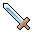
Forjada para os desfiles das Casas do Mar de Cinzas. Nunca devia ter visto sangue. Viu.Forged for the parades of the houses of the sea of ash. It was never meant to see blood. It did.
InicialStarter
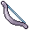
Corda de tendão de besta-de-areia. Acerta melhor quem tem paciência para esperar a distância certa.A sandbeast-sinew string. It rewards whoever waits for the right distance.
InicialStarter
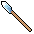
Os peregrinos caminham até o centro do deserto apoiados nela. Poucos voltam. As lanças sempre voltam.The pilgrims walk to the heart of the desert leaning on it. Few return. The spears always do.
30 de essência na Vigia30 essence at the Watcher
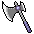
Na Casa Vesper, a sentença era lida pelo cego e executada pelo surdo. Assim ninguém ouvia o perdão.In house vesper, the sentence was read by the blind and carried out by the deaf. So no one ever heard the pardon.
40 de essência na Vigia40 essence at the Watcher
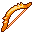
As pontas são mergulhadas em Cinza Sagrada. O que ela toca lembra que um deus ardeu aqui.The tips are dipped in sacred ash. Whatever it touches remembers a god burned here.
35 de essência na Vigia35 essence at the Watcher
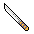
Um par de assassinos da duna usava uma cada. Quando um morreu, o outro passou a usar as duas.A pair of dune assassins each carried one. When one died, the other took both.
45 de essência na Vigia45 essence at the Watcher
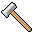
Os ferreiros cativos não largam os seus. Este foi tirado de uma mão que ainda estava quente.The captive smiths never let go of theirs. This one was taken from a hand that was still warm.
55 de essência na Vigia55 essence at the Watcher
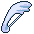
A corda é um fio de gelo que nunca derrete. A flecha chega antes do frio.The string is a thread of ice that never melts. The arrow arrives before the cold.
50 de essência na Vigia50 essence at the Watcher
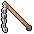
Trançado com um galho que ainda cresce. Cada vez que estala, fica um pouco mais comprido.Braided from a branch that is still growing. Every crack makes it a little longer.
45 de essência na Vigia45 essence at the Watcher
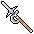
O ceifeiro dos Salões colhia o trigo que nunca nasceu. Gira para os dois lados, como quem não sabe de onde vem o frio.The reaper of the halls harvested wheat that never sprouted. It swings both ways, like someone who does not know where the cold comes from.
50 de essência na Vigia50 essence at the Watcher
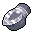
Mãos de um autômato do Observatório, desparafusadas com paciência. Ainda contam os golpes em voz baixa.The hands of an observatory automaton, patiently unscrewed. They still count the blows under their breath.
40 de essência na Vigia40 essence at the Watcher
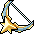
Três virotes amarelos de uma vez. Em Carcosa ninguém mira: atira-se em tudo que tem rosto.Three yellow bolts at once. In carcosa no one aims: They shoot at anything with a face.
45 de essência na Vigia45 essence at the Watcher
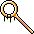
Aponta para onde o deus estava. O que sai dele procura alguém para acertar, como o astrônomo procurava.It points where the god used to be. What comes out seeks someone to hit, as the astronomer once sought.
55 de essência na Vigia55 essence at the Watcher
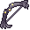
Costela e tendão de alguém que pediu para ser útil depois de morto.Rib and tendon of someone who asked to be useful after death.
40 de essência na Vigia40 essence at the Watcher
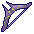
Atira duas flechas: uma para pedir, outra para agradecer. As duas acertam.Shoots two arrows: One to ask, one to thank. Both hit.
45 de essência na Vigia45 essence at the Watcher
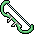
Duas chamas-fátuas por disparo. Como a raposa, vão na frente e não param de procurar.Two will-o'-wisps per shot. Like the fox, they go ahead and never stop searching.
60 de essência na Vigia60 essence at the Watcher
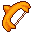
A Sonâmbula atirava dormindo e nunca errava. A flecha sabe onde você queria acertar.The sleepwalker shot in her sleep and never missed. The arrow knows where you meant to hit.
55 de essência na Vigia55 essence at the Watcher
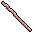
Gasto na ponta de tanto apontar caminhos. Todos errados, mas com convicção.Worn at the tip from pointing the way. Always wrong, but with conviction.
40 de essência na Vigia40 essence at the Watcher
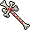
O Chamador lia os nomes dos mortos com ele. Cada glifo que sai é um nome procurando o dono.The caller read the names of the dead with it. Each glyph it casts is a name looking for its owner.
55 de essência na Vigia55 essence at the Watcher
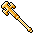
Feita com os votos de ouro que ninguém veio buscar. Cada pancada é uma promessa cumprida.Made from golden vows no one came to claim. Every blow is a promise kept.
50 de essência na Vigia50 essence at the Watcher
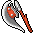
O primeiro que o deus engoliu cortava a própria comida com isto. Por dentro do deus, nunca faltou.The first one the god swallowed cut his own food with this. Inside the god, there was always enough.
55 de essência na Vigia55 essence at the Watcher
Um punhado de dentes que caíram da Goela. Jogados, voltam a morder.A handful of teeth from the gullet. Thrown, they bite again.
50 de essência na Vigia50 essence at the Watcher
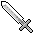
O salteador cobrava pedágio com ela. Não tinha onde gastar: a estrada não chega a lugar nenhum.The highwayman collected tolls with it. Nowhere to spend them: The road leads nowhere.
35 de essência na Vigia35 essence at the Watcher
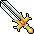
Grande demais para qualquer mão viva. O rei a carregava sem saber por quê. Agora você também.Too big for any living hand. The king carried it without knowing why. Now so do you.
70 de essência na Vigia70 essence at the Watcher
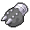
Arrancadas de algo que vivia dentro de algo que vivia dentro do deus.Torn from something that lived inside something that lived inside the god.
45 de essência na Vigia45 essence at the Watcher
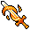
Ela sonhava que lutava. Quando acordou, a lâmina ficou na sua mão, ainda sonhando.She dreamed she was fighting. When she woke, the blade stayed in your hand, still dreaming.
60 de essência na Vigia60 essence at the Watcher
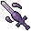
As carpideiras cortam uma mecha de quem choram com ela. A lâmina não lembra de quem; você vai lembrar.The mourners cut a lock of hair from the ones they weep for with it. The blade doesn't remember whose; you will.
45 de essência na Vigia45 essence at the Watcher
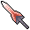
Feita da crina de fogo azul de um pesadelo. Quem leva o golpe acorda assustado, se acordar.Made from the blue fire mane of a nightmare. Whoever takes the blow wakes in fright, if they wake.
55 de essência na Vigia55 essence at the Watcher
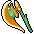
Pedágio pago em ferro. O touro aceitava, mas cortava junto.A toll paid in iron. The bull accepted it, but cut too.
55 de essência na Vigia55 essence at the Watcher
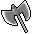
Cavou mil anos atrás de um deus que não queria ser achado. Ainda tem a forma da mão do dono.It dug for a thousand years after a god who didn't want to be found. It still has the shape of its owner's hand.
45 de essência na Vigia45 essence at the Watcher
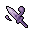
O Eremita lutava no escuro e não precisava ver. Acerta onde dói, não onde brilha.The hermit fought in the dark and needed no sight. It strikes where it hurts, not where it shines.
50 de essência na Vigia50 essence at the Watcher
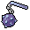
Os escavadores abriam caminho com isto. O caminho, às vezes, era alguém.The diggers cleared the way with this. Sometimes the way was someone.
50 de essência na Vigia50 essence at the Watcher
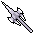
O cavaleiro votivo desceu com ele para guardar a nave. A ferrugem é a única coisa que não se afogou.The votive knight went down with it to guard the nave. The rust is the only thing that didn't drown.
50 de essência na Vigia50 essence at the Watcher
SKILLS
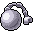
Um punhado de Cinza Sagrada num jarro de barro. Os sacerdotes chamam de heresia. Os soldados, de munição.A handful of sacred ash in a clay jar. The priests call it heresy. The soldiers call it ammunition.
InicialStarter
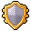
Escudo da guarda pessoal do Imperador. O polimento é um espelho: quem ataca vê a si mesmo antes do golpe.Shield of the emperor's personal guard. Its polish is a mirror: Whoever attacks sees themselves before the blow.
35 de essência na Vigia35 essence at the Watcher
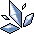
Arrancada do corpo de um fulgurante. Ainda vibra quando passa perto da areia.Torn from a fulgurite's body. It still hums near the sand.
35 de essência na Vigia35 essence at the Watcher
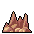
Os caçadores da duna enterram isto na cinza e esperam. A cinza é paciente; eles também.The dune hunters bury this in the ash and wait. The ash is patient; so are they.
40 de essência na Vigia40 essence at the Watcher
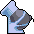
Um olho de fulgurante preso num tripé. Atira em tudo que se mexe, menos em quem o montou.A fulgurite eye mounted on a tripod. It shoots at everything that moves, except whoever set it up.
50 de essência na Vigia50 essence at the Watcher
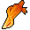
O que sobra de um peregrino que ardeu acreditando. Ainda quer lutar.What remains of a pilgrim who burned believing. It still wants to fight.
55 de essência na Vigia55 essence at the Watcher
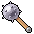
Prendia os cativos à bigorna. Agora puxa quem estiver longe demais.It chained the captives to the anvil. Now it pulls in whoever strays too far.
45 de essência na Vigia45 essence at the Watcher
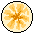
O sino do Arauto, que anuncia o rei que nunca chega. Quem ouve para no lugar, esperando.The herald's bell, which announces the king who never comes. Whoever hears it freezes in place, waiting.
50 de essência na Vigia50 essence at the Watcher
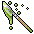
Uma muda da Mãe-Raiz. Plantada no chão, corre na direção que você apontar e não perdoa nada no caminho.A seedling of the root mother. Planted in the ground, it runs where you point it and spares nothing in its path.
45 de essência na Vigia45 essence at the Watcher
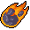
Cada estrela caída é um nome que o deus esqueceu. Esta lembra o seu.Each fallen star is a name the god forgot. This one remembers yours.
60 de essência na Vigia60 essence at the Watcher
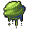
Um jarro do que o Ventre usava para digerir deuses. Queima por mais tempo.A jar of what the belly used to digest gods. It burns longer.
45 de essência na Vigia45 essence at the Watcher
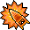
Uma fileira de dentes plantada no chão. Mordem quem pisa.A row of teeth planted in the ground. They bite whoever steps on them.
50 de essência na Vigia50 essence at the Watcher
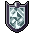
Uma tampa de pedra do fundo da caverna. Não brilha. Não precisa.A stone lid from the bottom of the cave. It doesn't shine. It doesn't need to.
45 de essência na Vigia45 essence at the Watcher
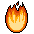
Uma das nove chamas da raposa. Vai na frente, como ela ia.One of the fox's nine flames. It goes ahead, as she did.
60 de essência na Vigia60 essence at the Watcher
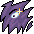
Um choro tão alto que os vivos esquecem de se mexer.A wail so loud the living forget to move.
45 de essência na Vigia45 essence at the Watcher
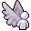
Puxa a vítima para perto. Na estrada, a conversa é sempre de perto.Pulls the victim close. On the road, every talk is up close.
40 de essência na Vigia40 essence at the Watcher
A última luz que alguém levou para as Cavernas. Caiu. Ainda cai, sempre que você pede.The last light anyone carried into the caverns. It fell. It still falls, whenever you ask.
55 de essência na Vigia55 essence at the Watcher
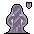
Corre por baixo da terra e agarra o primeiro pé que encontra.Runs under the earth and grabs the first foot it finds.
45 de essência na Vigia45 essence at the Watcher
Fica parado, de olho fechado, atirando no que vê no sonho. Vê tudo.It stays still, eye closed, shooting at what it sees in the dream. It sees everything.
55 de essência na Vigia55 essence at the Watcher
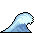
A água que encheu a Catedral ainda corre pelo chão quando você chama.The water that filled the cathedral still runs along the floor when you call.
50 de essência na Vigia50 essence at the Watcher
Um pesadelo pequeno, que aprendeu a correr por cima dos outros.A small nightmare that learned to run over the others.
60 de essência na Vigia60 essence at the Watcher
Uma prece afiada. Atravessa tudo até chegar a quem tem que ouvir.A sharpened prayer. It pierces everything until it reaches whoever must hear it.
45 de essência na Vigia45 essence at the Watcher
SKINS
Só mudam o visual. Cada uma tem cromas, outras cores com as tintas dos domínios.Cosmetic only. Each one has chromas: other colorways in the domains' palettes.
Você acordou com ele. Ninguém lembra de costurar.You woke up wearing it. No one remembers sewing it.
Já vem liberadaUnlocked from the start · 4 cromas4 chromas
Tecido com a cinza do deus que ardeu. Ainda morno.Woven from the ash of the god who burned. Still warm.
60 de essência na Vigia60 essence at the Watcher · 4 cromas4 chromas
As cores da Casa Vesper. A Casa caiu; o orgulho não.The colors of house vesper. The house fell; the pride did not.
90 de essência na Vigia90 essence at the Watcher · 4 cromas4 chromas
Um fulgurante tentou te engolir. Ficou com a forma.A fulgurite tried to swallow you. It kept your shape.
140 de essência na Vigia140 essence at the Watcher · 4 cromas4 chromas
O futuro se vê de olhos fechados. Ele tinha razão.The future is seen with eyes closed. He was right.
Derrote o Imperador CegoDefeat the blind emperor · 4 cromas4 chromas
Dez vezes na cinza. Agora você começa a ouvir.Ten times in the ash. Now you begin to hear.
Morra 10 vezesDie 10 times · 4 cromas4 chromas
Existe só enquanto alguém sonha. Por via das dúvidas, não durma.It exists only while someone dreams. Just in case, don't sleep.
190 de essência na Vigia190 essence at the Watcher · 3 cromas3 chromas
Poeira de todos os caminhos do Bosque, que são um só.Dust from every path in the forest, which are all one.
100 de essência na Vigia100 essence at the Watcher · 3 cromas3 chromas
O que sobra de quem voltou da cinza vezes demais.What is left of one who came back from the ash too many times.
Morra 10 vezesDie 10 times · 3 cromas3 chromas
Curtido no escuro. Não reflete luz nenhuma.Tanned in the dark. It reflects no light at all.
120 de essência na Vigia120 essence at the Watcher · 3 cromas3 chromas
Uma escama só já pesa como armadura. Esta é a mais leve.A single scale weighs like armor. This is the lightest.
170 de essência na Vigia170 essence at the Watcher · 3 cromas3 chromas
Leve como quem dorme. Quem olha muito tempo boceja.Light as sleep. Whoever stares too long yawns.
140 de essência na Vigia140 essence at the Watcher · 3 cromas3 chromas
Costurada pelas carpideiras para quem ninguém mais lembra.Sewn by the mourners for those no one remembers anymore.
110 de essência na Vigia110 essence at the Watcher · 3 cromas3 chromas
Pelo branco de raposa, com a ponta acesa.White fox fur, with a glowing tip.
180 de essência na Vigia180 essence at the Watcher · 3 cromas3 chromas
Não pergunte do que é feito. Ainda está quente.Don't ask what it's made of. It's still warm.
130 de essência na Vigia130 essence at the Watcher · 3 cromas3 chromas

Uma coroa gasta de tanto ser tocada. O nome, você inventa.A crown worn from being touched. The name, you make up.
Derrote o Imperador CegoDefeat the blind emperor · 3 cromas3 chromas
Alguém rezou para ficar com isto. Foi atendido.Someone prayed to wear this. The prayer was answered.
200 de essência na Vigia200 essence at the Watcher · 3 cromas3 chromas
Ainda pingam. Cheiram a incenso e a fundo de rio.Still dripping. They smell of incense and riverbed.
120 de essência na Vigia120 essence at the Watcher · 3 cromas3 chromas
MUTATIONS
No altar de cada passagem. Até três por partida; valem até você morrer.At the altar in each passage. Up to three per run; they last until you die.
PROGRESSION
Ouro e o que você carrega se perdem na morte. Essência entregue à Vigia, plantas, bênçãos, aparências e runas ficam.Gold and what you carry are lost on death. Essence spent at the Watcher, blueprints, blessings, skins and runes stay.
| NenhumaNone | Como da primeira vezLike the first time |
| 11 | Inimigos +40% de vida, +25% de danoEnemies +40% health, +25% damage |
| 22 | +80% de vida, +50% de dano, um frasco a menos+80% health, +50% damage, one flask fewer |
| 33 | +120% de vida, +75% de dano, um frasco a menos+120% health, +75% damage, one flask fewer |
| 44 | +160% de vida, +100% de dano, um frasco a menos · libera o final verdadeiro+160% health, +100% damage, one flask fewer · unlocks the true ending |
CONTROLS
| AndarMove | A / D · ←/→ | Analógico |
| Pular (segure = mais alto, 2× = pulo duplo)Jump (hold = higher, 2× = double jump) | Espaço | A |
| Arma 1 / Arma 2Weapon 1 / Weapon 2 | J / K · mouse | X / Y |
| Habilidade 1 / 2Skill 1 / 2 | U / I | LB / RB |
| Rolar (invencível) e esquiva no arRoll (invincible) and air dash | Shift | B / RT |
| Beber o frascoDrink the flask | Q | LT |
| Usar / pegarUse / pick up | E | ↑ |
| Mergulho (no ar)Dive (in the air) | S + J | ↓ + X |
| Mapa (segure)Map (hold) | M / Tab | Select |
| PausaPause | Esc | Start |
Nada encontrado.Nothing found.